<h1>Staff</h1>

<div class="photos">
	<div><a href="http://www.cs.bham.ac.uk/~ahrensb">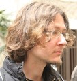<br>Benedikt Ahrens</a></div>
	<div><a href="https://www.birmingham.ac.uk/staff/profiles/computer-science/backens-miriam.aspx"><br>Miriam Backens</a></div>
	<div><a href="http://www.cs.bham.ac.uk/~mhe">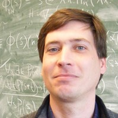<br>Martin Escardo</a></div>
	<div><a href="http://www.cs.bham.ac.uk/~drg">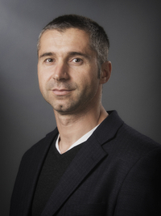<br>Dan Ghica</a></div>
	<div><a href="http://www.cs.bham.ac.uk/~axj">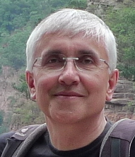<br>Achim Jung</a></div>
	<div><a href="http://www.cs.bham.ac.uk/~pbl">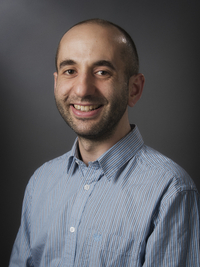<br>Paul Levy</a></div>
	<div><a href="http://www.cs.bham.ac.uk/~parkerdx/">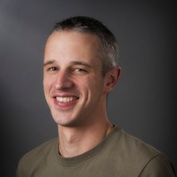<br>Dave Parker</a></div>
	<div><a href="http://www.cs.bham.ac.uk/~rahliv/">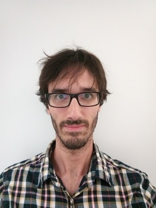<br>Vincent Rahli</a></div>
	<div><a href="http://www.cs.bham.ac.uk/~udr"><br>Uday Reddy</a></div>
	<div><a href="http://www.cs.bham.ac.uk/~exr">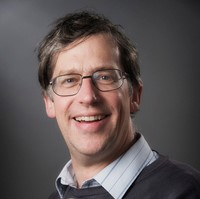<br>Eike Ritter</a></div>
	<div><a href="http://www.cs.bham.ac.uk/~vicaryjo">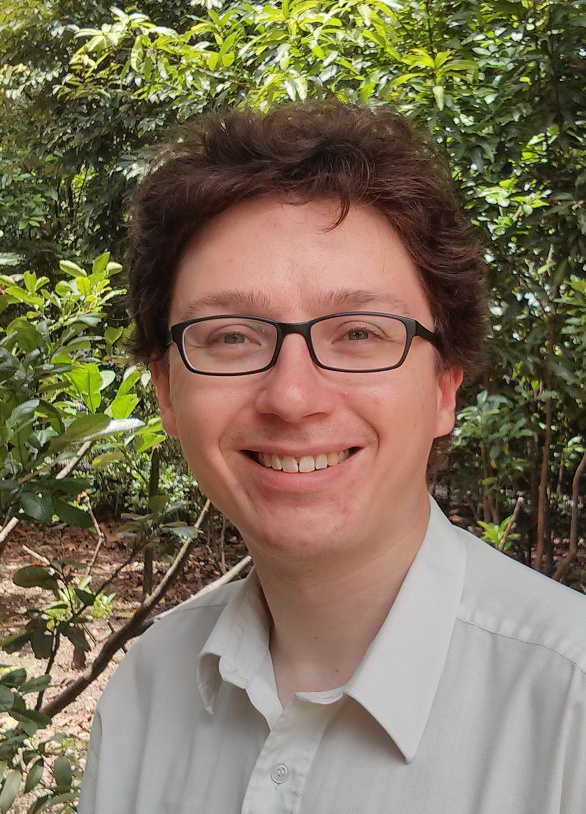<br>Jamie Vicary</a></div>
	<div><a href="http://www.cs.bham.ac.uk/~zeilbern">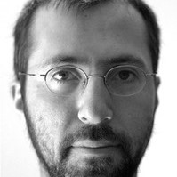<br>Noam Zeilberger</a></div>
</div>

<h1>Researchers</h1>

<div class="photos">
	<div><a href="http://www.cs.bham.ac.uk/~devesasm/"><br>Marco Devesos Campos</a></div>
	<div><a href="http://ericfinster.github.io/"><br>Eric Finster</a></div>
	<div><a href="http://www.cs.bham.ac.uk/~ais523/"><br>Alex Smith</a></div>
</div>

<h1>Honorary research fellows</h1>

<div class="photos">
	<div><a href="https://scholar.google.co.uk/citations?user=8cqzaKkAAAAJ&hl=en">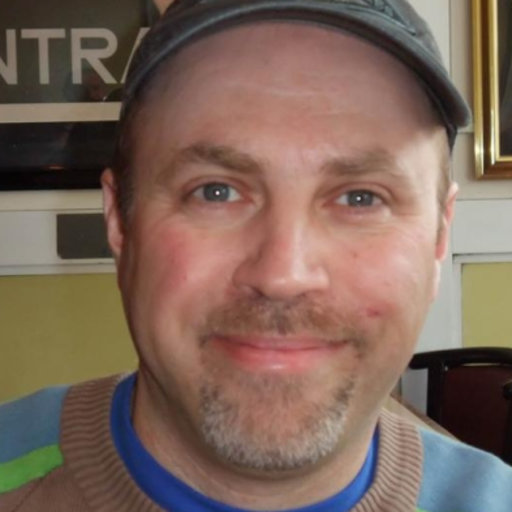<br>Claudio Hermida</a></div>
	<div><a href="https://hoelzl.fr/">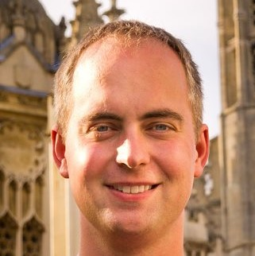<br>Rupert Hőlzl</a></div>
	<div><a href="https://paigenorth.github.io/">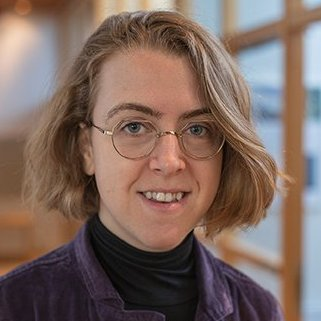<br>Paige North</a></div>
	<div><a href="http://www.valeriadepaiva.org/">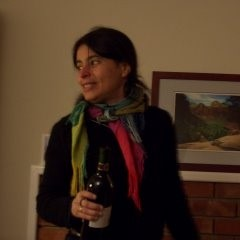<br>Valeria de Paiva</a></div>
	<div><a href="https://www.swansea.ac.uk/staff/science/computer-science/paulya/">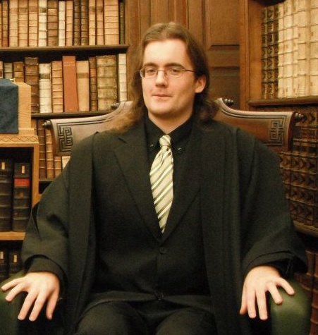<br>Arno Pauly</a></div>
	<div><br>Matthias Schrőder</div>
	<div><a href="https://www.cs.bham.ac.uk/~axs/">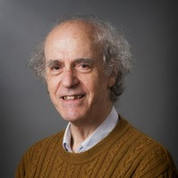<br>Aaron Sloman</a></div>
	<div><a href="https://floriansteinberg.github.io/"><br>Florian Steinberg</a></div>
	<div><a href="https://www.paultaylor.eu/">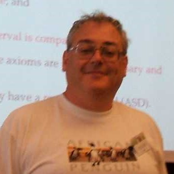<br>Paul Taylor</a></div>
	<div><a href="http://www.cs.bham.ac.uk/~sjv">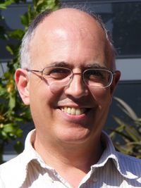<br>Steve Vickers</a></div>
</div>

<h1>PhD students</h1>

<div class="photos">
	<div><a href="https://www.cs.bham.ac.uk/~txw467/">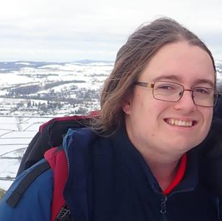<br>Todd Waugh Ambridge</a></div>
	<div><a href="http://www.rntz.net/"><br>Michael Arntzenius</a></div>
	<div><a href="https://nicolas-blanco.github.io/"><br>Nicolas Blanco</a></div>
	<div><a href="http://www.cs.bham.ac.uk/~abb538/">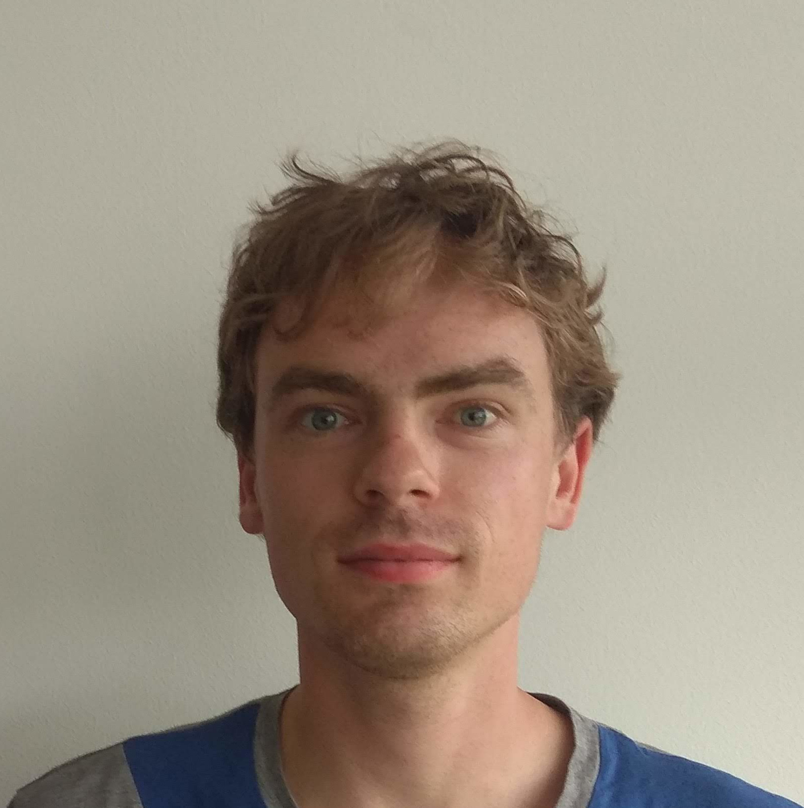<br>Auke Booij</a></div>
	<div><a href="http://www.cs.bham.ac.uk/~wtc488/">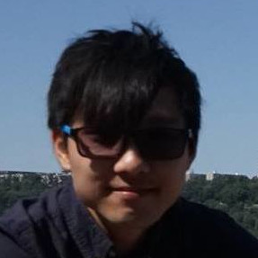<br>Steven Cheung</a></div>
	<div><a href="http://www.cs.bham.ac.uk/~yxf566/">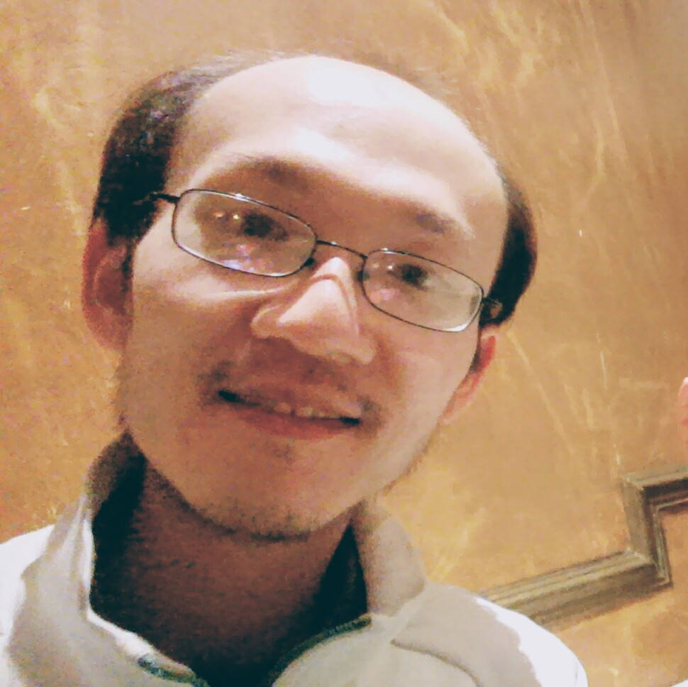<br>Yuning Feng</a></div>
	<div><a href="https://bram.xyz/blog/">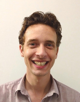<br>Bram Geron</a></div>
	<div><a href="https://www.cs.bham.ac.uk/~txg523/"><br>Tom Goodman</a></div>
	<div><a href="https://sinhp.github.io/">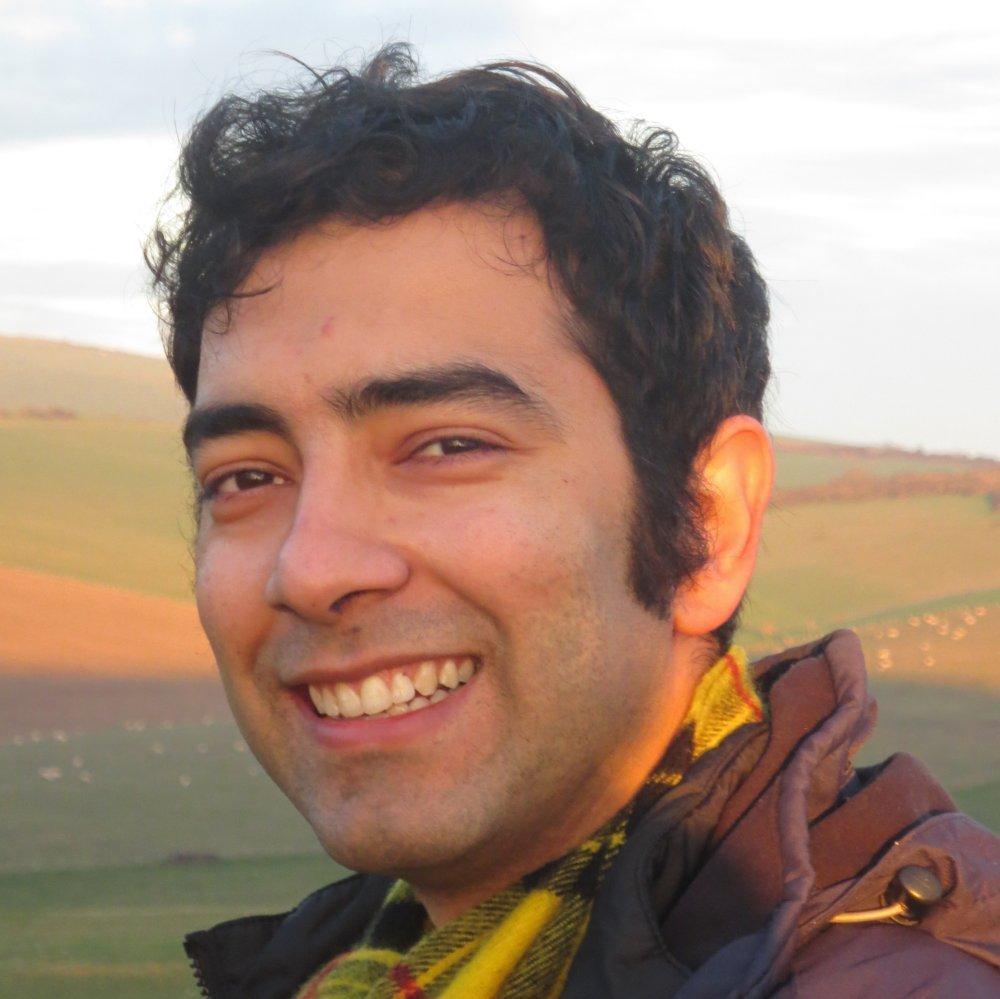<br>Sina Hazratpour</a></div>
	<div><a href="https://www.cs.bham.ac.uk/~txd880/">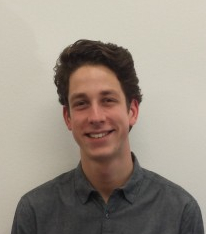<br>Tom de Jong</a></div>
	<div>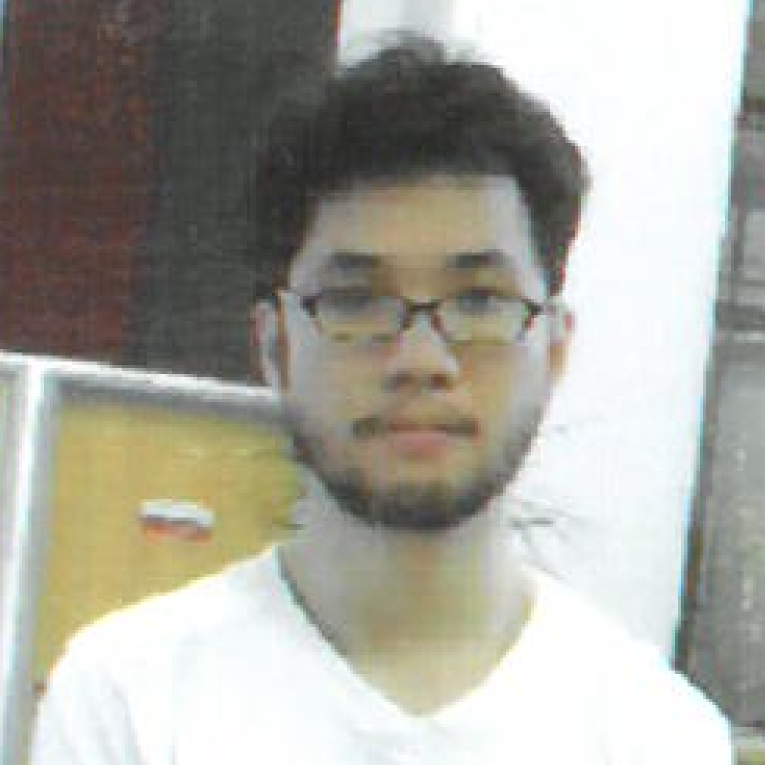<br>Ming Ng</div>
	<div><a href="http://www.cs.bham.ac.uk/~axs1431/">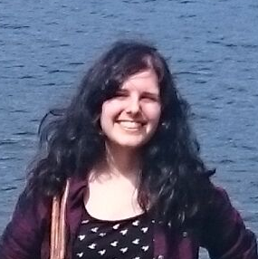<br>Anna Laura Suarez</a></div>
</div>

<h1>Past members</h1>

<div class="photos">
	<div><a href="https://www.nottingham.ac.uk/computerscience/people/natasha.alechina"><br>Natasha Alechina</a></div>
	<div><a href="http://www.di.unito.it/~bono/index.html">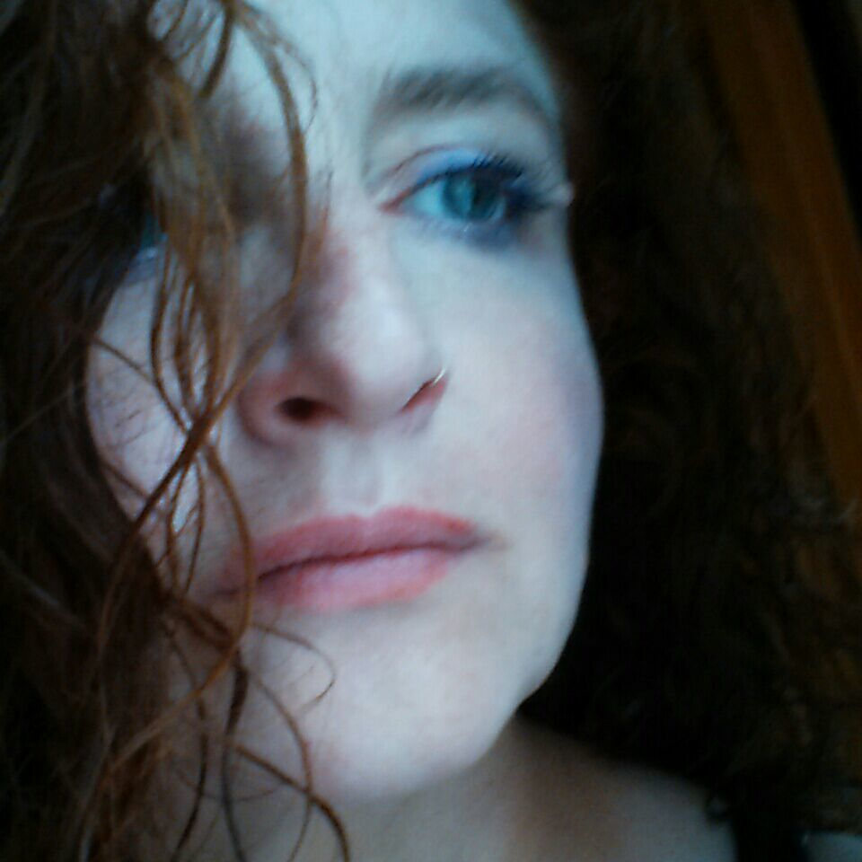<br>Viviana Bono</a></div>
	<div><a href="https://personal.cis.strath.ac.uk/neil.ghani/"><br>Neil Ghani</a></div>
	<div><a href="http://www.rw.cdl.uni-saarland.de/users/heckmann/heckmann.html"><br>Reinhold Heckmann</a></div>
	<div><a href="https://kam.mff.cuni.cz/~jaklt/">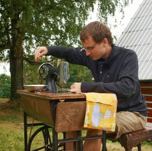<br>Tomáš Jakl</a></div>
	<div><br>Xiaodong Jia</div>
	<div><br>Mathias Kegelmann</div>
	<div><a href="https://www.cs.bham.ac.uk/~cmk497/"><br>Cory Knapp</a></div>
	<div><a href="https://www.cl.cam.ac.uk/~nk480/">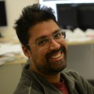<br>Neel Krishnaswami</a></div>
	<div><a href="http://www.cs.ox.ac.uk/marta.kwiatkowska/"><br>Marta Kwiatkowska</a></div>
	<div><a href="https://www.math.unipd.it/~maietti/">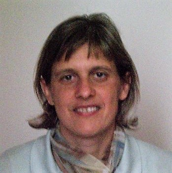<br>Milly Maietti</a></div>
	<div><a href="http://www.cs.bham.ac.uk/~kxm538/">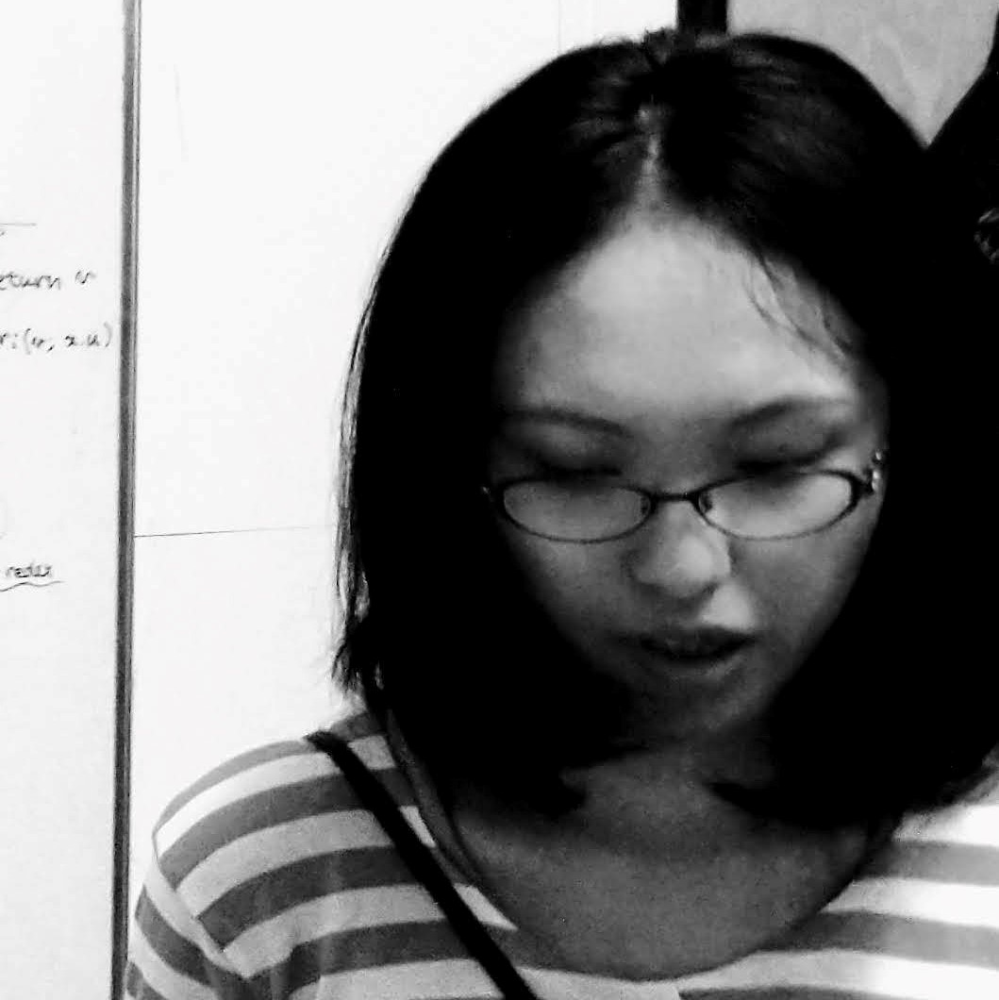<br>Koko Muroya</a></div>
	<div><a href="http://www.cs.man.ac.uk/~schalk/">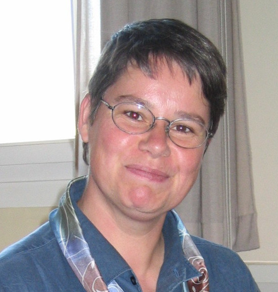<br>Andrea Schalk</a></div>
	<div><br>Michael Smyth</div>
	<div><a href="http://www.cs.bham.ac.uk/~hxt/">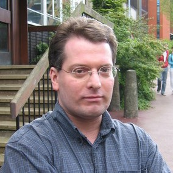<br>Hayo Thielecke</a></div>
</div>
